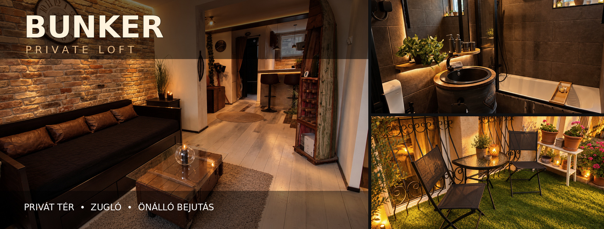
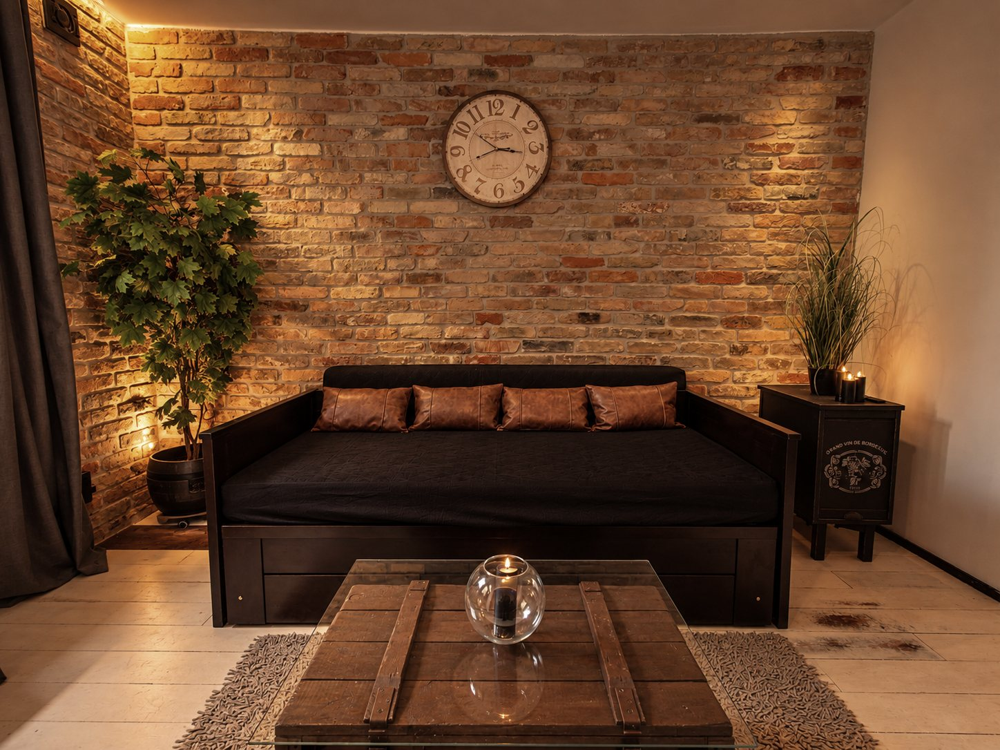

BUNKER
Egy különleges, hangulatos tér, ahol az idő kizárólag rólatok szól. Diszkrét érkezés, zavartalan együttlét, gondosan megtervezett részletek.

Csak ti.
Semmi más.
A BUNKER egy körülbelül 35 m²-es, karakteres, indusztriális hangulatú privát loft Budapest Zugló városrészében. Meleg fények, rusztikus anyagok és gondosan kialakított terek várnak.
Az önálló, kódos bejutás és a privát parkolási lehetőség segít abban, hogy az érkezés és a távozás is kényelmes és diszkrét legyen.
Néhány órás kikapcsolódáshoz, különleges alkalmakhoz vagy egyszerűen csak egy kis közös időhöz.

Mindenről gondoskodtunk.
Nektek csak egymásra kell figyelnetek.
A loft felszereltségét úgy állítottuk össze, hogy a közösen eltöltött idő valóban gondtalan legyen. Egyes bekészítések elérhetősége változhat; foglaláskor egyeztethető.
Privát élmény
- 180 × 200 cm-es fekvőfelület
- Külön használható masszázsmatrac
- Igény szerint felszerelhető szexhinta
- Masszázsolaj
- Hangulatos, szabályozható világítás
Fürdő & kényelem
- Tiszta törölközők és köntösök
- Papucsok
- Tusfürdők
- Eldobható fogkefe és fogkrém
- Sminklemosó
- Papírtörlő és alapvető higiéniai bekészítés
Apró figyelmességek
- Ásványvíz
- Automata kávégép
- Kávé- és teabekészítés
- Felszerelt konyhasarok
- Privát kerti pihenő
Diszkréció
- Önálló, kódos bejutás
- Okosotthon-megoldások
- Privát parkolási lehetőség
- Nyugodt, önállóan használható tér
- Budapest XIV. kerület, Zugló
Nézz körül a BUNKER-ben
A galériában a helyszín eredeti fotóit láthatod.
Időtartamok és árak
A foglalás előzetes egyeztetéssel történik. Az árak a loft privát használatára vonatkoznak az adott időtartamra.
Egyszerűen. Diszkréten.
A pontos érkezési tudnivalókat és a belépéshez szükséges információkat a visszaigazolt foglaláshoz biztosítjuk.
A következő néhány óra
csak a tiétek lehet.
Foglalási szándék esetén írd meg a kívánt napot, érkezési időpontot és időtartamot. Vedd fel velünk a kapcsolatot e-mailben vagy WhatsAppon, és egyeztetjük a részleteket.
E-mail: bunkerprivat@gmail.com · WhatsApp: +36 70 552 3616